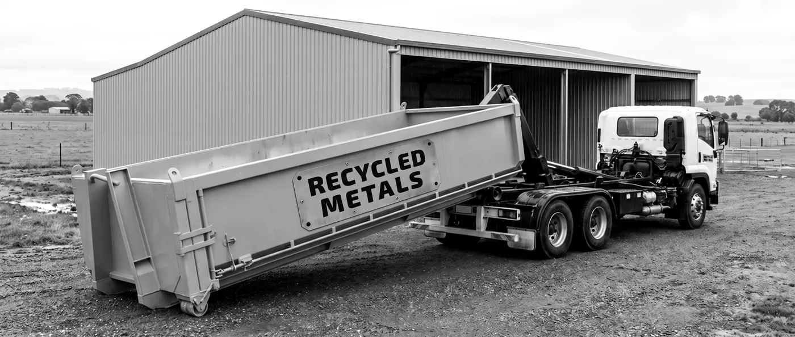

Enquire
Tell Rory what you've got.
A bin for regular steel, a skip bin, an operator with an excavator and grapple, or containers and boats taken away. Send the details and Rory comes back to you. Drop-off needs no booking.

Details
- Call
- Rory Tonkin 0433 115 500
- nigel@recycle.net.au
- Drop-off
- Recycle North Geelong
116 Furner Avenue, North Geelong VIC 3215 - Open
- Monday to Saturday, 7am to 5pm · 6am to 6pm by appointment
- Area
- Werribee to Portland, the coast to Ballarat. Service area
Questions
The short answers.
Is scrap metal paid for?
No. Recycled Metals doesn't buy scrap metal. Drop-off is free, any volume, and bins and collections are by enquiry.
Do I need to book a drop-off?
No booking for a car, ute or trailer, Monday to Saturday, 7am to 5pm. Earlier or later, 6am to 6pm, is by appointment. Semi-trailer and B‑double loads go to Nunjara, Atkinsons Road, Moorabool.
What bin sizes are there?
1 to 2 m³ bins for regular steel on a regular pick-up, and skip bins in 15, 32 and 42 m³.
Hard drives and batteries?
Drives and SSDs come out or get wiped before computers or servers are collected. Batteries removed from equipment travel separately, and are taken too.
What can't come in?
Asbestos, chemicals and hazardous waste, full or hired gas cylinders, firearms and explosives, clinical waste, and anything still holding fuel or oil.